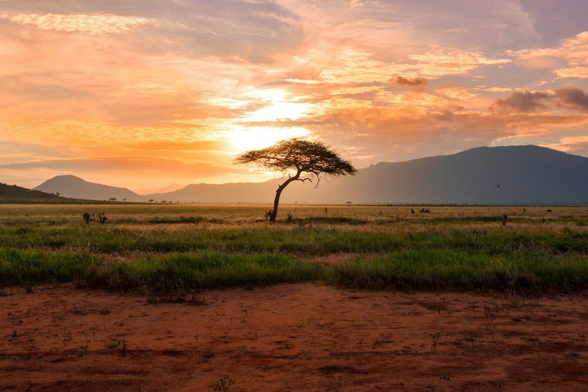
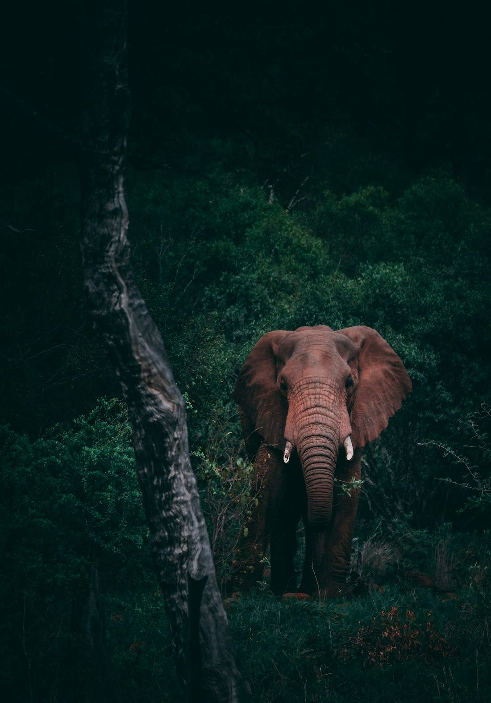

01 / ADAMAWA
Adamawa Region
Capital: Ngaoundéré
Known for: cool plateau scenery, waterfalls, grazing land and the northern railway terminus at Ngaoundéré.
Plan this regionOften called “Africa in miniature”, Cameroon brings together mountains, rainforest, savannah, rivers, coastline and a rich mix of cultures.
Plan your Cameroon journeyUse this guide to compare regions and start shaping an itinerary. Amigo can help match your interests, season and timing to the places that suit you.
French and English are Cameroon’s official languages, and many local languages are spoken across the regions.

Capital: Ngaoundéré
Known for: cool plateau scenery, waterfalls, grazing land and the northern railway terminus at Ngaoundéré.
Plan this region
Capital: Yaoundé
Known for: the national capital, civic landmarks, museums, markets and green hillside neighbourhoods.
Explore Yaoundé
Capital: Bertoua
Known for: Congo Basin rainforest, biodiversity and protected areas such as Lobéké National Park.
Explore Lobéké
Capital: Maroua
Known for: open savannah, Waza National Park, Sahelian culture and craft traditions.
Check current travel advisories and local guidance before planning a visit to parts of the Far North.
Explore Waza
Capital: Douala
Known for: Cameroon’s main port city, contemporary arts, markets and the Ekom-Nkam Waterfalls.
Explore Douala
Capital: Garoua
Known for: warm savannah landscapes, the Benue River and wildlife areas including Bénoué National Park.
Check current travel advisories and local guidance before planning a visit to parts of the North.
Plan this region
Capital: Bamenda
Known for: green highlands, traditional chiefdoms, crater lakes and the Ring Road scenery.
Check current travel advisories and local guidance before planning a visit to the Northwest.
Plan this region
Capital: Ebolowa
Known for: Atlantic beaches at Kribi, forest culture and the Lobé Waterfalls.
Explore Kribi
Capital: Buea
Known for: Mount Cameroon, Limbe’s beaches and wildlife centre, and lush coastal-highland scenery.
Check current travel advisories and local guidance before planning a visit to the Southwest.
Explore Mount Cameroon
Capital: Bafoussam
Known for: Bamoun and grassfields heritage, Foumban’s royal palace museum, crafts and cool highland air.
Explore Foumban